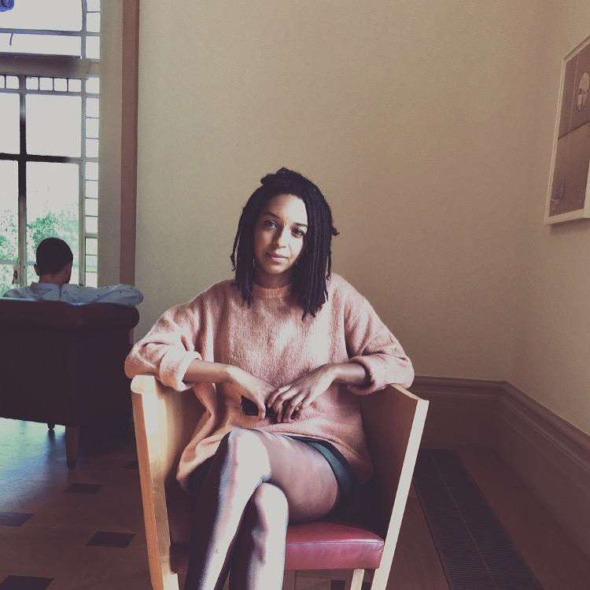

Alex Fynn O'Neill
Digital Content Editor
About Me
A communications professional with over 8 years experience in Visual Arts and Culture at major organisations including Whitechapel Gallery and Tate. Experienced in managing a range of communications campaigns, including collaborations with Max Mara, Swarovski, Film London, Vinyl Factory, BBC and Phillips Auction, with a focus on producing digital content, devising social media and e-communications strategies and copywriting.
Experience
- Whitechapel Gallery (2012 – Present)
- Tate Britain (2010 - 2012)
- Tate Liverpool (2008 - 2010